BAJA CALIFORNIA SUR
Baja California Sur, oficialmente Estado Libre y Soberano de Baja California Sur, es uno de los treinta y un estados que junto con la Ciudad de México conforman México. Su capital y ciudad más poblada es La Paz. Está dividido en cinco municipios.
Se ubica en la parte Sur de la península de Baja California en la región noroeste del país, limitando al norte con Baja California, al este con el Golfo de California y al sur y oeste con el océano Pacífico. Con 73 909 km² representa el 3.8 % del territorio nacional siendo la novena entidad federativa más grande del país por detrás de Chihuahua, Sonora, Coahuila, Durango, Oaxaca, Tamaulipas, Jalisco y Zacatecas.
Su población censada en 2020 resultó de 798 447 habitantes que representa el 0.6 % de la población total siendo la segunda entidad menos poblada por detrás de Colima y la primera menos densamente poblada; dicha población está distribuida como 91 % urbana y 9 % rural. Debido a su baja población aporta únicamente al PIB nacional un 0.9 % siendo la cuarta entidad que menos aporta por detrás de Tlaxcala, Colima y Nayarit; su mayor actividad económica es el comercio. En 2019 obtuvo un Índice de desarrollo humano de 0.804 —considerado muy alto— siendo una de las seis entidades con un IDH en dicho nivel y la cuarta entidad con mayor IDH por detrás de Ciudad de México, Baja California y Nuevo León.
Como entidad subnacional una vez formada la federación mexicana en 1824 se constituyó como parte del territorio de Baja California. Dicho territorio se dividió en 1930 y adquirió su área actual como el territorio Sur de Baja California. Fue hasta el 8 de octubre de 1974 cuando se promovió a estado libre y soberano —junto a Quintana Roo— siendo el trigésimo primero estado por orden de unión y, por consiguiente, el más joven del país.
Dentro de su territorio se ubican tres de los treinta y cinco Patrimonios de la Humanidad de México. Uno cultural: las pinturas rupestres de la sierra de San Francisco y dos naturales: el Santuario de ballenas de El Vizcaíno y las Islas y áreas protegidas del Golfo de California, compartiendo el último junto a Baja California, Sonora, Sinaloa y Nayarit.
TOPONIMIA
El nombre California ya existía antes del descubrimiento de América o primera exploración de los europeos en tierras como nombre de un país ficticio y paradisíaco. Es dudosa la relación de tal apelación con el similar "Califerne", nombre de una reina no cristiana de la Canción de Roldán, cuya etimología es diferente (del francés "calife"). En la novela de caballería Las sergas de Esplandián, publicada en 1510 en Sevilla (España), se cita por vez primera el nombre tal y como lo conocemos en la actualidad, quizá proveniente de "Cálida fornax" u ‘horno caliente’ más el sufijo de país -ia.
"Sabed que a la diestra mano de las Indias existe una isla llamada California muy cerca de un costado del paraíso Terrenal; y estaba poblada por mujeres negras, sin que existiera allí un hombre, pues vivían a la manera de las amazonas. Eran de bellos y robustos cuerpos, fogoso valor y gran fuerza. Su isla era la más fuerte de todo el mundo, con sus escarpados farallones y sus pétreas costas. Sus armas eran todas de oro y del mismo metal ponies mágicos eran los arneses de las bestias salvajes que ellas acostumbraban domar para montarlas, porque en toda la isla no había otro metal que el oro".
Sin embargo, según Fernando Jordán en su libro "El otro México" dice:
Cristóbal Colón, que al descubrir el continente [...] Desde entonces, esa desconocida e inabordable isla de las amazonas habría de llamarse California. El nombre, por lo demás, no era nuevo; Montalvo lo encontró y lo tomó al leer La Canción de Rolando. "Muerto está mi sobrino que conquistó tantas tierras,y ahora los sajones se rebelaron contra mi,y los húngaros, y los búlgaros y tantos otros, los romanos, los de pulla y los de palermo y los de África y los de California."
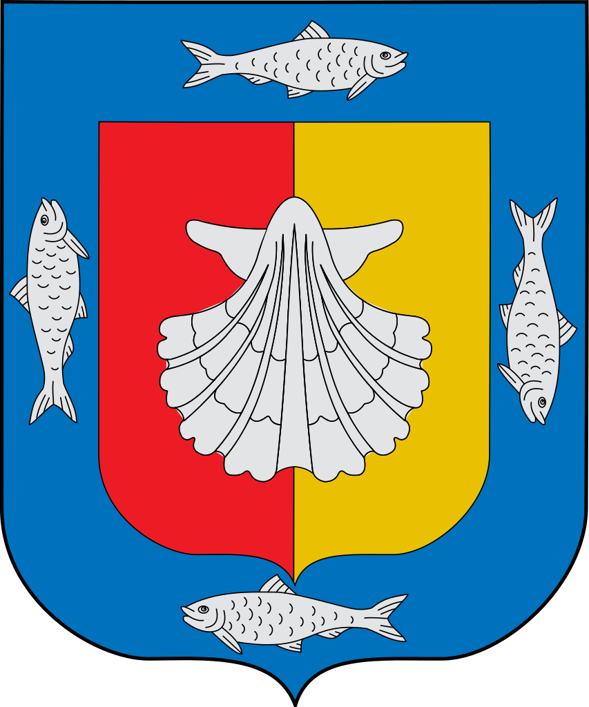
HISTORIA
En una remota antigüedad calculada en catorce mil años llegaron a la península por la ruta de las costas del océano Pacífico los primeros grupos humanos nómadas, de economía de subsistencia. Existían tres grupos tribales perfectamente definidos en la época prehispánica: los pericúes, guaycuras y cochimíes. Los pericúes habitaban la parte sur de la península y se extendían hacia el norte, desde Cabo San Lucas hasta la parte media de la península, los Guaycuras habitaban la parte media y los Cochimíes en el extremo norte.
Paralelamente a los cochimíes se anota la existencia de otros grupos nómadas tales como: kumiai (k'miai), una de las familias indígenas que junto con los cucapá, pai pai, kiliwa, cahilla y akula poblaron el norte de la península de Baja California, todos pertenecientes al tronco yumano.
Baja California Sur (o Sudcalifornia) estuvo habitada antiguamente por tres grupos principales: al sur los pericúes, al centro los guaycuras y al norte los cochimíes. Algunos miembros de este último grupo viven aún en poblaciones del vecino estado de Baja California. Se cree que las primeras inmigraciones provenientes del norte ocurrieron hace más de diez mil años. Los primeros "californianos" vivían de la caza, la pesca y la recolección en un medio natural difícil. Los aborígenes encontrados por los primeros expedicionarios europeos desconocían tanto su origen como a los autores de las pinturas rupestres y petrograbados, de los cuales esta entidad federativa cuenta con el mayor número de sitios en la República, localizados en toda la extensión del territorio estatal. Es poco también lo que se sabe de sus lenguas, de las que se conservan solo algunas palabras y frases.
PRIMERAS EXPLORACIONES
LOS PRIMEROS CONTACTOS
Hernán Cortés envió cinco expediciones marítimas al noroeste de Nueva España en busca de un paso que se suponía habría de comunicar al Pacífico con el Atlántico, incrementando así el poder de España en todo este lado del mundo. Las tres primeras fracasaron; en la cuarta se produjo un motín cuyos rebeldes, en su huida al norte, llegaron a lo que hoy es La Paz. Si al principio fueron bien recibidos por los nativos, al final fueron expulsados y muertos varios de ellos cuando pretendieron cometer algunos abusos. La quinta expedición fue comandada por el propio Cortés; quien llegó al lugar donde habían estado los amotinados, imponiéndole el nombre de Santa Cruz, el 3 de mayo de 1535. Ahí se fundó una colonia en la que permanecieron el conquistador y su gente durante casi dos años. Las penurias para conseguir alimentos y el rechazo de los indígenas, los convenció de abandonar la empresa.
A partir de entonces se empezó a dar esa parte sur de la península el nombre de California. Esta palabra existía previamente en una novela de la época, llamada Las sergas de Esplandián (de Garci Rodríguez de Montalvo), la cual menciona una isla con esta denominación, situada precisamente a la derecha del continente americano, gobernada por la reina Calafia, poblada solo por mujeres y donde todo era de oro. Tal vez algunos pensaron que Cortés había llegado efectivamente a esa California, o comenzaron a darle esa designación.
Por ello se creyó durante mucho tiempo que la parte conocida de la península era la principal de las islas Californias. Los viajes de europeos a California fueron muchos, pero la mayoría de ellos fracasaron. A fines del siglo XVI, el explorador Sebastián Vizcaíno reconoció el lugar donde había estado Cortés y lo rebautizó como La Paz. El atractivo principal de California eran sus perlas.
El interés en las tierras al oeste y noroeste de la Nueva España se concentró en las Indias Orientales y solamente por accidente fue divertido este interés a California. El fracaso de las expediciones de Álvaro Saavedra Cerón y Diego Hurtado de Mendoza en las Molucas no disminuyó los planes de Don Hernán Cortés para engrandecer sus dominios; y en octubre de 1533 tenía ya preparada una nueva expedición marítima en Tehuantepec, la San Lázaro al mando de Hernando de Grijalva y la Concepción al mando de Diego de Becerra. Durante la primera noche del viaje se separaron las naos y la San Lázaro fue forzada hacia el poniente de las Islas Revillagigedo mientras la Concepción continuó su derrota al noroeste por la costa mexicana. Temiendo perderse, la tripulación de la Concepción se amotinó bajo el mando del piloto Fortún Ximénez, y asesinado Becerra, prosiguió el viaje sin autorización. Forzada por los temporales, la Concepción se acercó a la península de Baja California y alcanzó las cercanías de la Bahía de Santa Cruz (La Paz) donde Ximénez y sus tripulantes trataron de establecer una pequeña colonia. Sin embargo, ésta duró poco tiempo debido a un ataque de los indios que costó las vidas de varios colonizadores, incluso la de Ximénez, y causó el regreso de los sobrevivientes a bordo de la Concepción a la costa de Jalisco donde fueron presos por Nuño de Guzmán.
Los tripulantes de la Concepción fueron pues los descubridores y primeros colonizadores de California. Al volver, sus relaciones de una nueva tierra y grandes riquezas de perlas, fueron recibidas por Hernán Cortés, quien comenzó la preparación de una nueva empresa para recuperar su nao de Guzmán y seguir las exploraciones de California. En abril de 1535 la expedición, compuesta por las naos San Lázaro, Santo Tomás y Santa Águeda, partió de Nueva España y tomando derrota al noroeste llegó a la Bahía de Santa Cruz el 3 de mayo.
Cortés tomó posesión de la tierra y estableció un real con el fin de formar una colonia permanente. Sin embargo, Cortés se encontró en conflictos legales en Nueva España siéndole ordenado volver a la capital por el Virrey, Don Antonio de Mendoza, en 1537. bajo el mando de Francisco de Ulloa continuó la colonia, pero la pérdida del apoyo directo de Cortés causó cierta inquietud entre los colonizadores, inquietud que se vio incrementada por la falta de envíos de provisiones de Nueva España. Ulloa, confrontado por estos crecientes problemas, se halló tan necesitado que en 1539 abandonó totalmente la Bahía de Santa Cruz y con los últimos colonos regresó a Nueva España.
Para la segunda mitad del siglo XVII, desde el hoy puerto nayarita de Matanchén, los misioneros emprendieron la evangelización de la hoy Baja California. De esta forma Juan María Salvatierra y sus compañeros emprendieron una extensa labor que desde las costas novogallegas motivó a la fundación de cada vez más norteñas misiones dentro de la península. El 13 de febrero de 1768, tras la expulsión de los jesuitas, ahora desde el puerto nayarita de San Blas, misioneros como fray Junípero Serra y gobernantes como Fernando de Rivera y Moncada reemprendieron la evangelización y poblamiento de la zona, extendiéndose por fin hasta la Alta California.
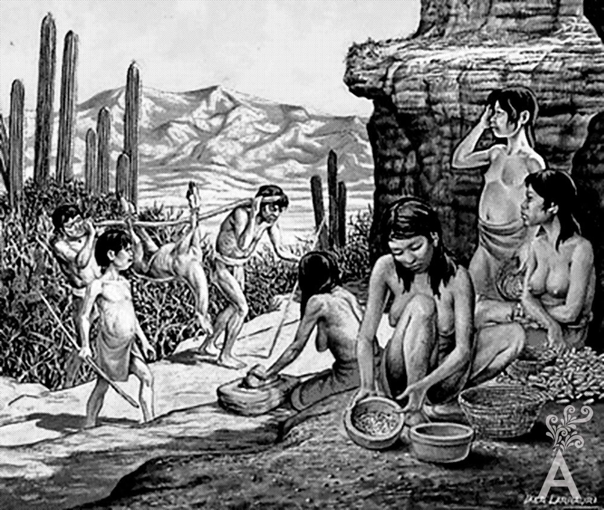
PERSONAJES DISTINGUIDOS
Manuel Márquez de León (1822-1890): Participó con heroísmo en la guerra de 1847, Gobernador de Sinaloa y Durango.
Rosaura Zapata Cano (1876-1963): Maestra, creadora de los jardines de niños en el país.
Agustín Olachea Avilés (1890-1974): Militar. Nació en Todos Santos, B.C.S.; participó en la Revolución Mexicana, Gobernador de Baja California (Norte) y dos veces Gobernador de Baja California Sur; Presidente Nacional del Partido Revolucionario Institucional y Secretario de la Defensa Nacional. Impulsor del desarrollo económico de Baja California Sur, principalmente en el aspecto agrícola, a su iniciativa se abrieron al cultivo los Valles de Los Planes y Santo Domingo.
Rafael M. Pedrajo (1896-1982) Participó en la Revolución Mexicana, Secretario de la Presidencia 1934-1935, Gobernador de Baja California Sur, apoyó la pesca, la agricultura, pero su principal logro como gobernador, fue la creación de empleos por la promoción turística de los atractivos naturales del estado que en la actualidad se conocen por designaciones o nombramientos, tal como las visitas a la isla del Espíritu Santo, el archipiélago del Espíritu Santo, los cactus, a playa balandra, el serpentario, todos los santos, los cabos, el arco, la Isla coronado, las bahías balandra, magdalena, de los sueños, la laguna ojo de liebre etc; Además, instruyó a los lugareños a portar los valores de su cultura nativa, siendo amables con los visitantes, a que cuidaran el entorno, ayudaran al que lo necesitara, etc; Durante su gestión hubo paz y orden en la región.
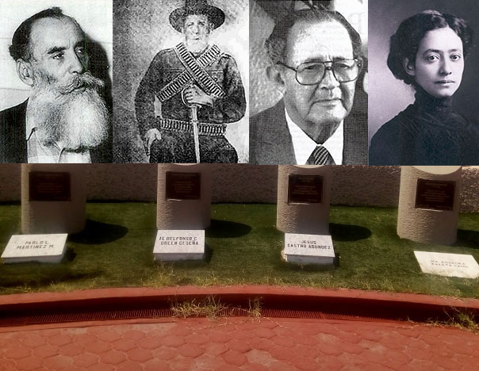
GEOGRAFÍA
LÍMITES
Limita al norte con el estado de Baja California situado por encima del paralelo 28ºN, al este con el mar de Cortés y al sur y oeste con el océano Pacífico. Su capital es la ciudad de La Paz. Se extiende por una superficie de 73,475 km², y ocupa un 3.8 % del territorio nacional.
Al norte se ubican las lagunas costeras de San Ignacio y Ojo de Liebre, las cuales son sitios de reproducción de la ballena gris y se encuentran protegidas por el gobierno federal. En la misma zona se ubica el desierto de El Vizcaíno, una reserva mundial de la biósfera. Posee también algunas islas en el océano Pacífico (Natividad, Magdalena y Santa Margarita) y otras en el mar de Cortés: San Marcos, Coronados, Carmen, Monserrat, Santa Catalina, Santa Cruz, San Diego, San José, San Francisco, Partida, Espíritu Santo y Cerralvo. Sus principales elevaciones son la Sierra La Laguna, el Volcán Las Tres Vírgenes y el Cerro Salsipuedes.
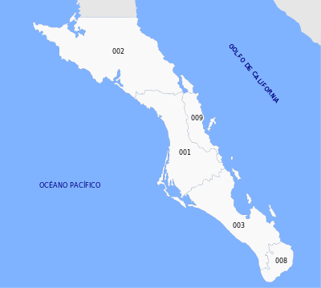
FLORA Y FAUNA: ESPECIES AUTÓCTONAS
PIQUERO PARDO
El piquero pardo, alcatraz pardo o boba marrón (Sula leucogaster) es una especie de ave suliforme de la familia Sulidae propia de la franja tropical y subtropical de los océanos Pacífico, Índico y Atlántico. Es un piquero claramente identificable por su plumaje principalmente pardo oscuro en contraste con el blanco de su vientre.
El piquero pardo es un ave marina de distribución pantropical con colonias de reproducción en los océanos Atlántico, Pacífico e Índico.
Según Murphy (1936), la raza típica del piquero café (S. leucogaster leucogaster) se encuentra en el océano Atlántico. En el Pacífico, existen dos subespecies: Sula leucogaster brewsteri (Goss, 1888), en el hemisferio norte y Sula leucogaster etesiaca (Thayer & Bangs, 1905), que se distribuye desde la zona occidental de Panamá hasta la zona norte de Ecuador y posiblemente también Perú, llegando por el sur hasta la isla Huampanú. En todo caso, las subespecies del Pacífico son algo distintas a la nominotípica del Atlántico, ya que en vez de tener la cabeza y garganta café como ésta, la tienen de color blanquecino grisáceo.
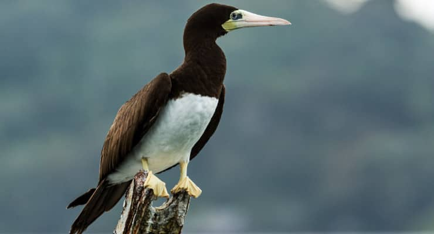
PUMA CONCOLOR
El puma, león de montaña o león americano (Nombre científico: Puma concolor) es un mamífero carnívoro de la familia Felidae nativo de América. Este felino vive en más lugares que cualquier otro mamífero silvestre terrestre del continente, ya que se extiende desde el Yukón, en Canadá, hasta el sur de la cordillera de los Andes y la Patagonia en América del Sur. El puma es adaptable y generalista, por lo que vive en los principales biomas de toda América. Es el segundo mayor felino en el continente americano, después del jaguar, y el cuarto más grande del mundo, después del tigre, y el león. Su tamaño es algo mayor que el del leopardo, aunque está más emparentado con los pequeños felinos, ya que, a diferencia de los grandes félidos del género Panthera, que pueden rugir (a excepción del irbis), el puma ronronea como los felinos menores.
Como cazador y depredador de emboscada, el puma obtiene una amplia variedad de presas. Su principal alimento son los ungulados como el ciervo, en particular en la parte septentrional de su área de distribución, pero también caza camélidos como el guanaco y especies tan pequeñas como insectos y roedores. Prefiere hábitat con vegetación densa durante las horas de acecho, pero puede vivir en zonas abiertas.
El puma es territorial y tiene una baja densidad de población. La extensión de su territorio depende de la vegetación y de la abundancia de presas. Aunque es un gran depredador, no siempre es la especie dominante en su área de distribución, como cuando compite con otros depredadores como el jaguar. Se trata de un felino solitario que por lo general evita a las personas. Los ataques a seres humanos son raros, aunque su frecuencia ha aumentado en los últimos años.
El puma fue considerado una fiera peligrosa a partir de la colonización europea de América. Esta consideración y la progresiva ocupación humana de los hábitats del puma han hecho que sus poblaciones disminuyan en casi todos sus hábitats históricos. En particular, el puma fue extinguido en la parte oriental de América del Norte, con excepción del caso aislado de una subpoblación en la Florida. Se cree que este felino podría recolonizar parte de su antiguo territorio oriental. Con su amplia distribución geográfica, el puma tiene decenas de nombres y es mencionado con diversas referencias en la mitología de los pueblos aborígenes de América y también en la cultura contemporánea.

TIBURON BLANCO
El gran tiburón blanco (Carcharodon carcharias) es una especie de pez cartilaginoso lamniforme de la familia Lamnidae (escualo). Vive en las aguas cálidas y templadas de casi todos los océanos. Esta especie es la única del género Carcharodon que sobrevive en la actualidad. A nivel mundial se considera Vulnerable (IUCN).

PEZ VELA
Los istiofóridos (Istiophoridae) son una familia de peces perciformes conocidos vulgarmente como marlines, agujas, picudos y peces vela. En todos ellos, los huesos nasales de la mandíbula superior se prolongan formando una "lanza" o "arpón" largo y de seccíón redondeada. La aleta dorsal, alargada y rígida, se proyecta hacia arriba en forma de cresta o penacho. Son depredadores activos y voraces que utilizan el "pico" extendido para atacar y atontar a sus presas, generalmente peces y cefalópodos. Son peces óseos grandes y comestibles, aunque no sabrosos y que alcanzan un peso máximo de unos 630 kilogramos. Las especies de esta familia son muy apreciadas en la pesca deportiva, no solo debido a su tamaño y velocidad de nado, sino también por ser duros luchadores que combinan rápidos nados subacuáticos con vistosos saltos para conseguir soltarse de la línea de pesca. Están relativamente emparentados con el pez espada y viven en la mayor parte de los mares cálidos y templados. El marlín negro, Istiompax indica, es una especie común en el Pacífico. El marlín blanco, Tetrapturus albidus, pez popular en la pesca deportiva en el Atlántico, junto con el marlín del Mediterráneo, Tetrapturus belone, son las especies presentes en el Mediterráneo. Los peces vela, Istiophorus albicans e Istiophorus platypterus, se los diferencia por su aleta dorsal de mayor tamaño. Las especies del género Kajikia y el marlín azul, Makaira nigricans, están considerados entre las especies vulnerables de extinción debido a la sobrepesca.
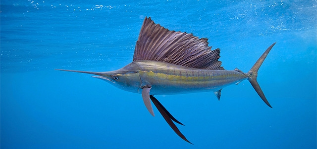
LOBO MARINO DE CALIFORNIA
El lobo marino de California o León marino de California (Zalophus californianus) es una especie de mamífero pinnípedo de la familia de los otáridos que vive en las costas del norte del Pacífico desde Canadá hasta la península de Baja California en México.
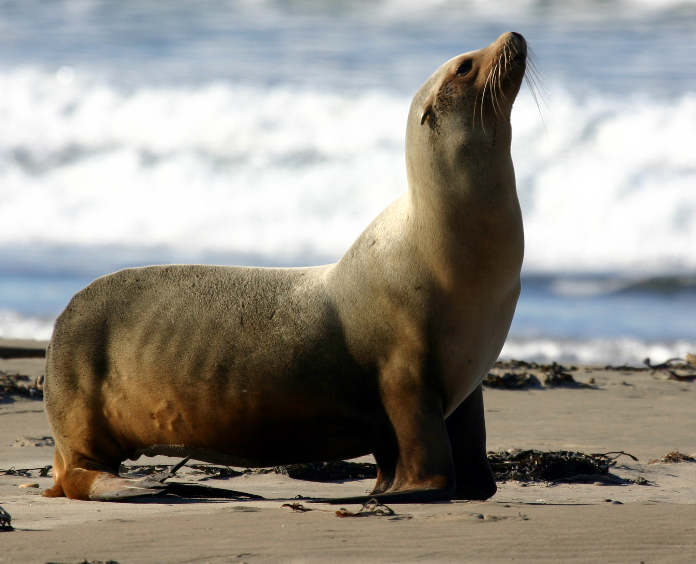
CODORNIZ CALIFORNIANA
El colín de California, codorniz californiana o codorniz de California (Callipepla californica) es una especie de ave galliforme de la familia Odontophoridae originaria de California (Estados Unidos), y Baja California (México).
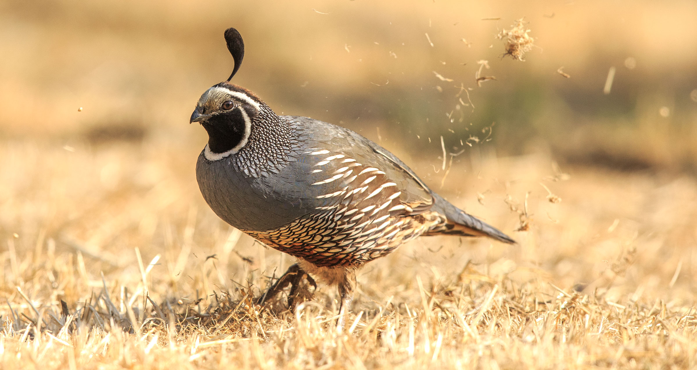
CASCABEL TROPICAL
La cascabel tropical, víbora de cascabel o cascabela (Crotalus durissus) es una especie venenosa de crótalo, distribuida en Latinoamérica: desde México a Sudamérica. Es la serpiente más distribuida de su género y es muy venenosa, siendo un grave problema de resolución médica su mordedura. Doce subespecies son reconocidas actualmente, incluyendo la forma típica.
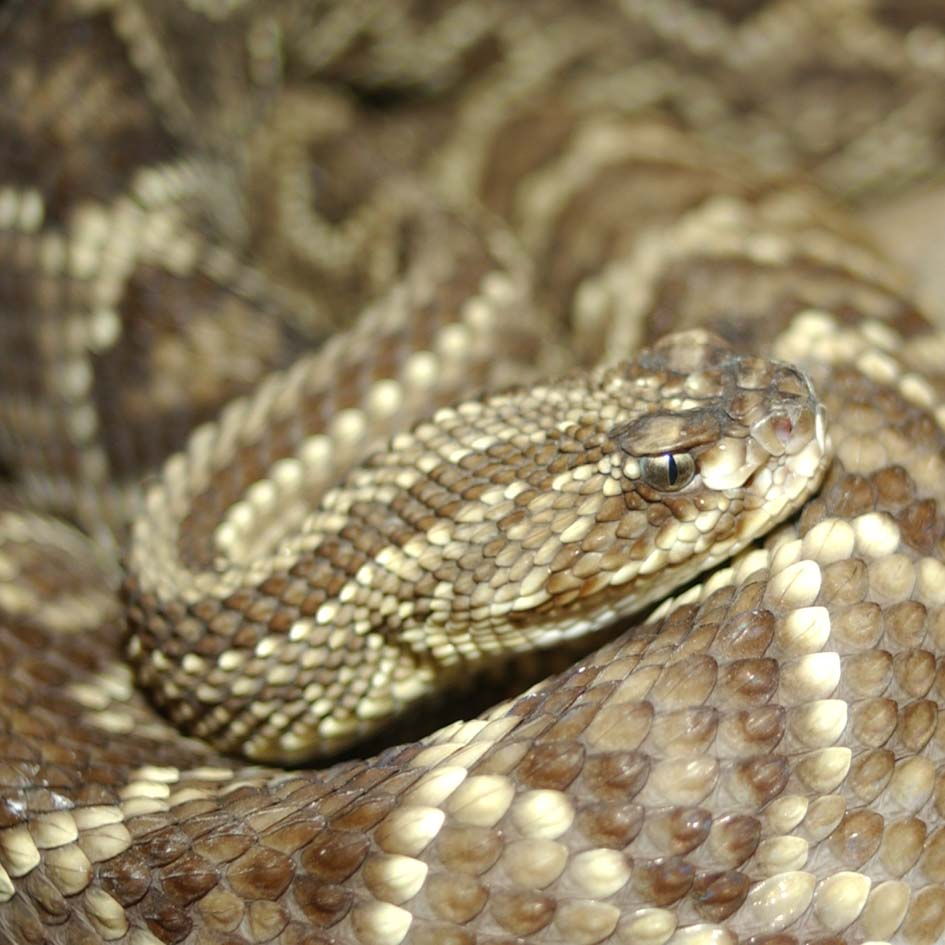
BERRENDO
El berrendo o antílope americano (Antilocapra americana) es una especie de mamífero artiodáctilo de la familia Antilocapridae. Se trata del único representante actual de su familia, aunque hasta principios del Pleistoceno contaba con numerosas especies. Con el paso del tiempo, todos se extinguieron por diversas causas, dejando al berrendo actual como único vestigio de su presencia.
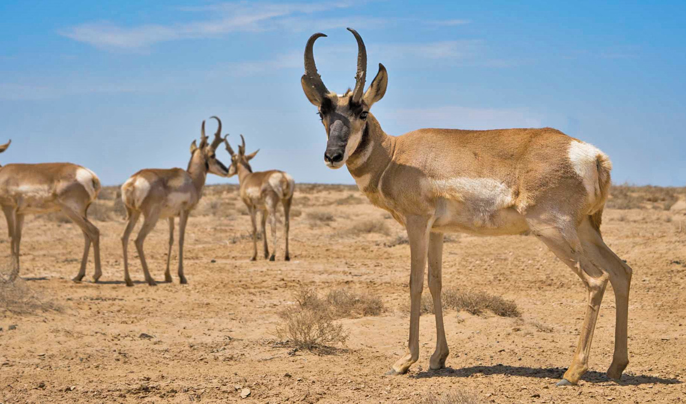
ZOPILOTE COMÚN
El zopilote común (Coragyps atratus), también llamado buitre negro americano, chulo, gallinazo común, gallinazo de cabeza negra, gallinazo negro, jote cabeza negra, jote de cabeza negra, zamuro o zopilote negro, es la única especie del género Coragyps. Es un ave Cathartiformes —aunque algunas clasificaciones la incluyen en el orden Ciconiiformes—, y uno de los más abundantes miembros de la familia de los buitres del Nuevo Mundo (Cathartidae). La Comisión Nacional para el Conocimiento y Uso de la Biodiversidad (CONABIO) considera al Orden Cathartiformes y a la Familia Cathartidae para la clasificación taxonómica de la especie. A pesar de su apariencia y nombres similares, esta especie no tiene relación con el buitre negro eurasiático (Aegypius monachus). Esta última especie pertenece a la subfamilia de los buitres del Viejo Mundo (Aegypiinae), que es a su vez parte de la familia Accipitridae (la cual incluye a las águilas, halcones, milanos, gavilanes y aguiluchos), mientras que la especie americana es parte de la familia de los buitres del Nuevo Mundo (Cathartidae). Mide aproximadamente 74 cm de longitud y tiene una envergadura de 1,67 m. Posee plumaje negro, cuello y cabeza grises sin plumas y pico corto en forma de gancho. Generalmente es silencioso pero muy sociable reuniéndose en grandes grupos.
La especie es conocida por ser carroñera; en áreas pobladas por humanos hurga en basureros, come huevos y material vegetal en descomposición y puede matar o lesionar a mamíferos recién nacidos o incapacitados. Como otros buitres, juegan un papel importante en el ecosistema al eliminar la carroña que de otra manera sería terreno fértil para enfermedades. El buitre negro americano también se alimenta ocasionalmente de ganado o de ciervos. Es la única especie de buitres del nuevo mundo que cazan este tipo de presas. Al faltarle la siringe —órgano vocal de las aves— solo produce gruñidos o siseos de frecuencia baja. Pone sus huevos en cuevas, árboles huecos o simplemente en el suelo. Generalmente tiene dos crías al año que alimenta mediante la regurgitación.
El buitre negro americano tiene una distribución Neártica y Neotropical. Habita principalmente en el sur de Estados Unidos, México, América Central y la mayor parte de América del Sur (aunque el mapa de distribución de la especie en Enciclovida reporta al menos dos observaciones en Canadá). En México se ha observado en todo el país con excepción de Baja California Sur. También puede encontrarse en las islas del Caribe. Habita áreas relativamente abiertas que le proveen bosques aislados y tierras con arbustos. Puede además encontrarse en bosques húmedos en tierras bajas, en bosques de arbustos en pastizales, pantanos y tierras húmedas, y viejos bosques degradados. Prefiere las tierras bajas y es raramente visto en áreas montañosas. Usualmente es visto planeando o posado en postes o árboles muertos. En los Estados Unidos, el buitre recibe protección legal por el Migratory Bird Treaty Act. Está listado como una de las especies de Preocupación Menor en la lista roja de la IUCN. Su población parece mantenerse estable y no ha alcanzado el umbral para su inclusión en las especies amenazadas, que requiere un decrecimiento de más del 30 por ciento en 10 años o en tres generaciones. Este buitre apareció además en algunos códices mayas.
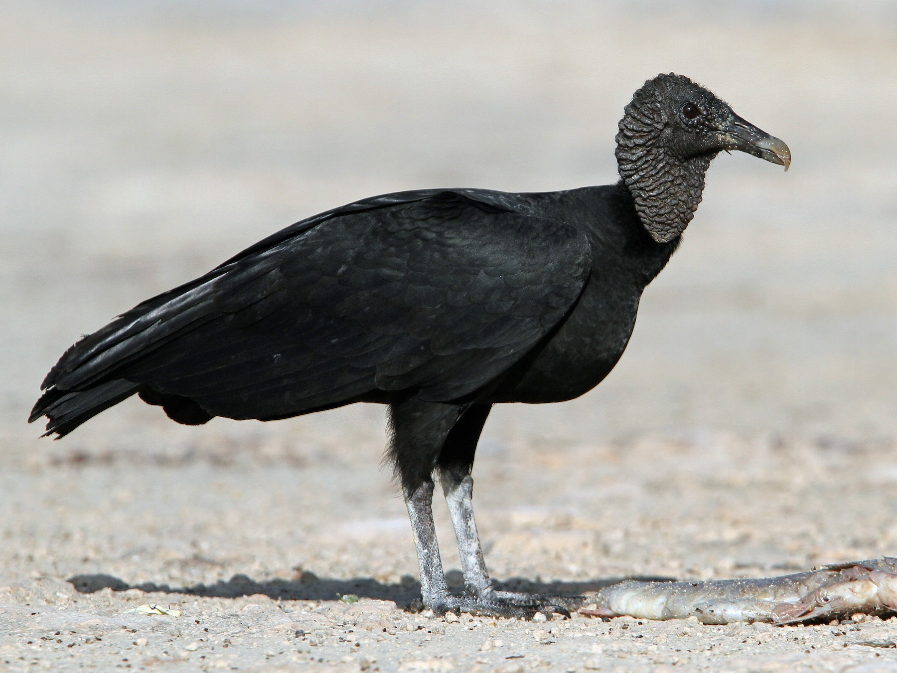
BORREGON CIMARRÓN
El borrego cimarrón, carnero de las Rocosas, musmón, muflón de las montañas o muflón canadiense (Ovis canadensis) es una especie de artiodáctilo de la familia de los bóvidos propia de Norteamérica.
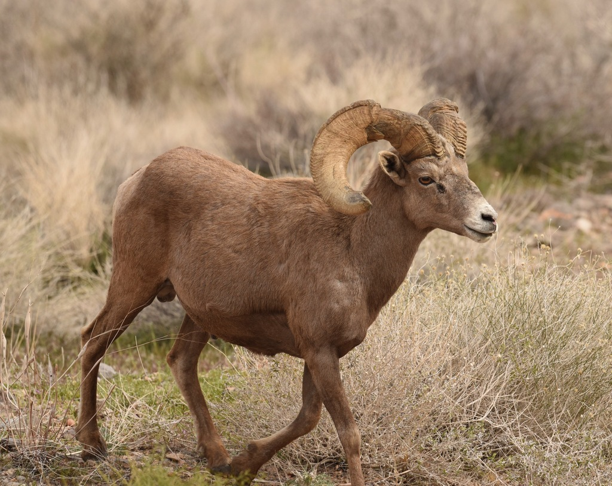
ÁRBOL CIRIO
El árbol cirio (Fouquieria columnaris) es un árbol de extraña apariencia dentro de la familia de las Fouquieriaceae, en la que otro de sus miembros es el ocotillo.
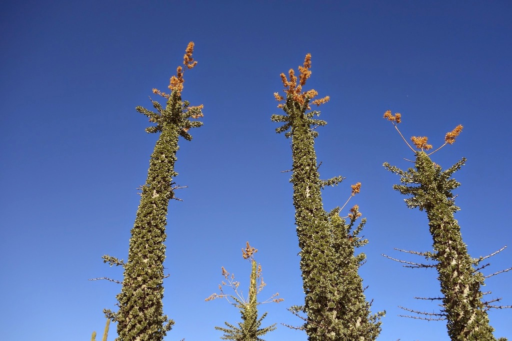
PALMERA
Phoenix dactylifera, de nombre común palma (o palmera) datilera/datilero, palma común, fénix o támara, es una palmera cuyo fruto comestible es el dátil, probablemente oriunda del suroeste de Asia.
Esta especie es una de las más notables del género Phoenix, que cuenta con otras quince, distribuidas desde Canarias, pasando por el norte de África y el sur de Asia, hasta el Extremo Oriente.
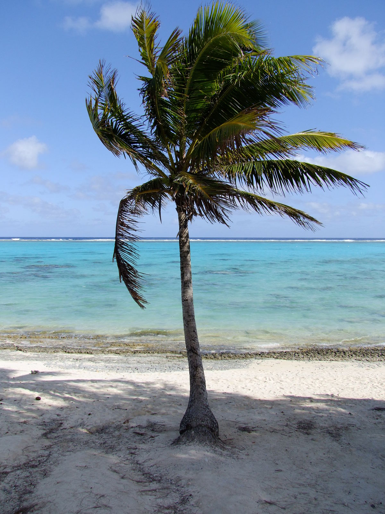
COREOPSIS GIGANTE
El coreopsis gigante (Coreopsis gigantea) es una planta leñosa perenne nativa de California y Baja California. El tallo es un tronco de 1-2 m de altura y 4-10 cm de diámetro. Con brillantes hojas verdes y flores que se encuentran en la parte superior del tronco, el resto del tronco está desnudo. Las flores son amarillas, parecidas a las margaritas, de 6-20 cm. Es una planta caducifolia, dejando su tronco desnudo en verano.

POBLACIÓN
Según las cifras que arrojó el Censo de Población y Vivienda realizado por el Instituto Nacional de Estadística y Geografía (INEGI) en 2020, el estado de Baja California sur contaba hasta ese año con un total de 798,447 habitantes. De ellos, 405,879 eran hombres y 392,568 eran mujeres. La tasa de crecimiento anual para la entidad durante el período 2005-2010 fue del 4.5%.
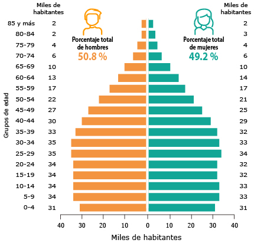
MONUMENTOS HISTÓRICOS
En el Estado se encuentra el Templo de Santa Barbara, diseñado por Gustavo Eiffel, mismo ingeniro francés que diseño la famosa torre francesa que lleva su nombre; el templo fue construido en el año de 1887 y en 1895 llegó de Bélgica, transportado en barco velero a Baja California Sur. Este templo desarmable de hierro de 30 metros de longitud tiene muros de doble lámina con un espacio de aire intermedio de 33 centrímetros, se colocó en el municipio de Mulegé.
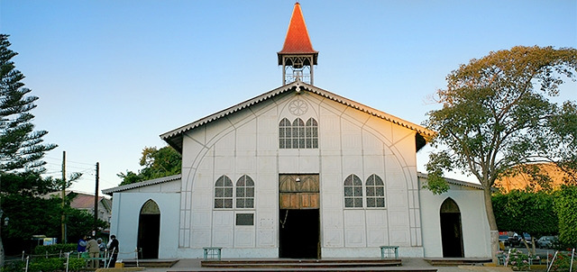
TRAJE TÍPICO
La falda semicircular de color rojo, lleva una planta de cacto ramificada, en la cual se distribuyen tres flores, una en la parte superior y dos a los costados, iguales a la blusa; también algunos frutos. A el rededor complementa con amplio olán de color blanco; los tonos en que van bordados y pintados, los cactos y flores son verdes, rosa y amarillo, con lentejuela y chaquira negra simulando la pulpa con sus semillas (lleva collar y aretes de perlas)
Del concurso de confección del traje regional nació la música para la danza "Las Pitahayas", arreglo que hizo el Prof. Gilberto R. Mendoza, basándose en la música regional; sacó una bellísima composición que conocida por toda la Baja California Sur, pasa a ser lo más representativo de nuestra entidad.
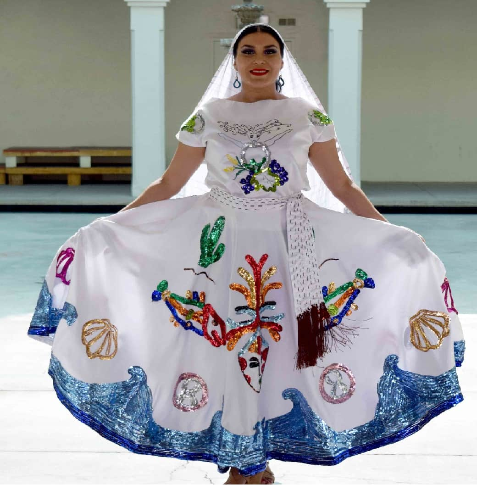
MÚSICA
En la música popular, el corrido es una de las expresiones más difundidas en la entidad. Debido al aislamiento geográfico, estas melodías hicieron las veces de medio de comunicación para dar a conocer lo ocurrido por medio de rimas y prosa de una gran imaginación. La difusión del corrido se extendió a partir de la Revolución Mexicana. Actualmente en muchas comunidades se escucha la música norteña y existen grupos que siguen utilizando los instrumentos originales, tales como: redova, guitarra, bajo y acordeón. Algunos de los bailes sudcalifornianos que ejecutan los grupos de danza de la entidad son: El Conejo, El Apasionado, El Chaverán, La Yuca, La Cuera, Las Calabazas y El Tupé.
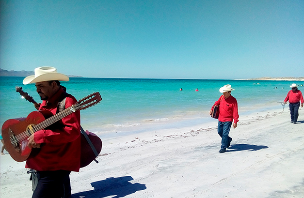
ARTESANÍAS
La artesanía es, sin duda, una de las actividades de mayor importancia en el Estado; su producción se registra en los cinco municipios y se encuentra en los más variados materiales, como: concha de abulón, caracol burro, palo chino, choya y cardón. En material como la palma encontrará canastas, diversas figuras, lámparas y tapetes, las cuales se elaboran en las comunidades de El Triunfo, Los Planes y la Sierra de los Dolores. El trabajo en talabartería crea productos que han sido utilizados desde hace muchos años como monturas, cintos, bolsas, fundas y la cuera (traje típico de los rancheros sudcalifornianos) Actualmente la creatividad de los pobladores de varias comunidades ha llegado a ser tan brillante que están reciclando el material de autos viejos para realizar cuchillería de una gran belleza y calidad.
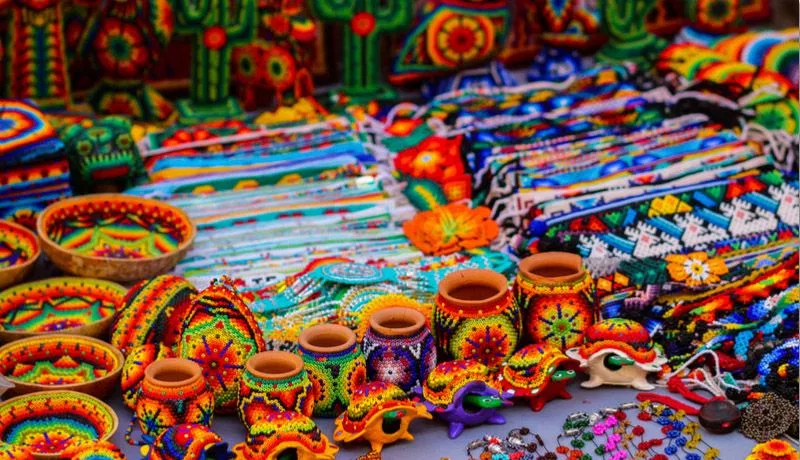
GASTRONOMÍA
Debido a la gran actividad pesquera desarrollada en el estado, la gastronomía sudcaliforniana ha ido adquiriendo un sello muy característico, por llevar a la práctica, en muchos de sus deliciosos platillos, exóticas recetas con pescados y mariscos que no son utilizados en el resto de la República, como es el caso de la manta raya.
El orégano y la damiana, son los principales condimentos utilizados; brindan un sabor y aroma inconfundibles a las delicias típicas de esta bellísima entidad.
Su cocina conserva algunos rasgos de la época prehispánica y se basa principalmente en los mariscos. Entre sus platillos tradicionales están las almejas empanizadas, la machaca regional hecha con carne saturada de hierbas aromáticas, la machaca con huevo y las siempre acostumbradas tortillas de harina.
En cuanto a nuestros dulces regionales son famosos las conservas de dátil y la papaya verde en almíbar. El guayabate, el mangate y el pitahayate son tradicionales de la región de San Bartolo y su consistencia es parecido a la de las jaleas. En los lugares donde hay caña de azúcar se elabora la panocha de gajo, el alfeñique y piloncillo. Por otro lado, en Santa Rosalía, encontramos que es ampliamente conocido su delicioso pan francés y el de dulce. Entre éste destacan las conchas, donas, pitahayitas y el pan de huevo.
Nuestra cocina incluye además productos de elaboración casera como la mantequilla, distintas variedades de queso, chorizo, vino de uva, de dátil y licor de damiana, entre otros.
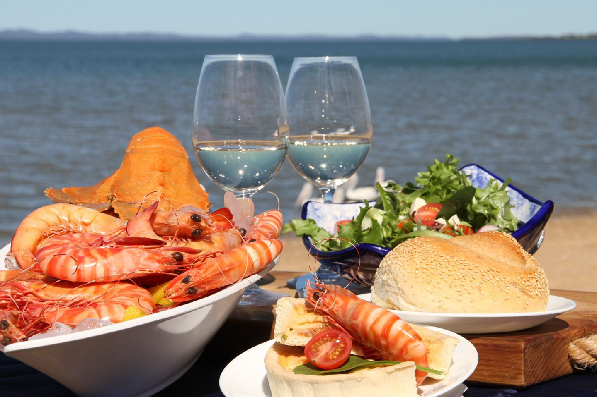
GOBERNADOR
Carlos Mendoza Davis (Ciudad de México; 21 de abril de 1969) es un político mexicano y abogado de profesión quien, desde el 10 de septiembre del 2015 y hasta el 9 de septiembre de 2021, se desempeñó como Gobernador del Estado de Baja California Sur para el periodo del 2015 al 2021. En la administración pública ha desempeñado diversos cargos, entre los que destacan el de Senador de la República por Baja California Sur y Secretario General de Gobierno del mismo estado. En su calidad de gobernador, desde el 21 de febrero de 2020 y hasta el 9 de septiembre de 2021 se desempeñó como Presidente de la Conferencia Nacional de Gobernadores.
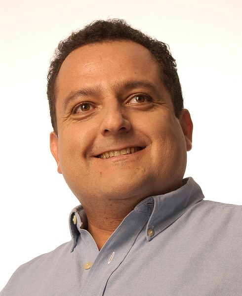
BIOGRAFÍA
Nació el 21 de abril de 1969 en la Ciudad de México . Es hijo de Ángel César Mendoza Arámburo, exgobernador de Baja California Sur, 1975-1981 y Luz Davis Garaizar, originarios de La Paz y Loreto, B.C.S., respectivamente. En el 2000 contrajo nupcias con Gabriela Velázquez Dipp, con quien ha procreado dos hijos: Gabriela (2003) y Carlos (2005).
En 1992 se graduó con honores como licenciado en Derecho en la Universidad Nacional Autónoma de México, con la tesis “Los derechos humanos y su protección en el derecho constitucional mexicano”.
En 1994, antes de iniciar sus estudios de maestría, asistió al Instituto de Derecho Internacional y Comparado, auspiciado de manera conjunta por la Escuela de Derecho de la Universidad Cornell (Cornell University Law School) y la Facultad de Derecho de la Universidad de París I Pantehón-Sorbonne.
En 1995 obtuvo el grado de maestro en Derecho (LLM) por la Universidad Cornell en Ithaca, Nueva York, en los Estados Unidos de América, con el trabajo de investigación intitulado: “La violación a los derechos humanos en los países del tercer mundo como causa para la imposición de sanciones económicas”.
Más tarde, en 2002, ganó la prestigiada beca del Ministerio de Asuntos Exteriores del Gobierno Británico Chevening, administrada por el Consejo Británico (British Council), esquema cuya finalidad es construir una red de amigos del Reino Unido, seleccionando en el mundo estudiantes que habrán de convertirse en líderes en sus países de origen. En tal virtud, en 2003, con la disertación titulada “La lucha contra el lavado de dinero en México: una evaluación crítica” se graduó como maestro en Políticas Comparadas en Latinoamérica (Msc) por la London School of Economics and Political Science en Londres, Inglaterra.
EXPERIENCIA PROFESIONAL
Del 1 de septiembre de 2012 al 11 de diciembre de 2014 fue Senador de la República, representando al Estado de Baja California Sur.
Del 5 de abril al 30 de noviembre de 2011, fungió como Secretario General de Gobierno en Baja California Sur, a designación del Gobernador Constitucional Marcos Alberto Covarrubias Villaseñor.
De mayo de 2007 y hasta octubre de 2010, se desempeñó como Delegado Regional del Instituto Mexicano del Seguro Social en Baja California Sur, a propuesta de su entonces director general, Juan Francisco Molinar Horcasitas. En su gestión al frente del IMSS en Baja California Sur, en el año 2009, se inició la construcción de un nuevo hospital del instituto en San José del Cabo, en respuesta a los reclamos por parte de los pobladores de esa localidad.
Cuando el Huracán Jimena (2009) devastó las costas de Baja California Sur, el entonces Secretario de Desarrollo Social, Ernesto Javier Cordero Arroyo designó a Mendoza Davis como enlace de las delegaciones estatales de las dependencias federales a fin de coordinar en ese ámbito las tareas de reconstrucción y control de daños.
Previo a su nombramiento como delegado del IMSS, se desempeñó como coordinador regional Noroeste (2003 – 2005) de la recién creada Financiera Rural, con competencia en los estados de Baja California, Baja California Sur, Sinaloa y Sonora, institución dirigida por el Secretario de Hacienda y Crédito Público de esa administración federal, José Antonio Meade Kuribreña.
En el Banco Nacional de Crédito Rural, (BANRURAL S.N.C.), fungió como director general adjunto de Relaciones Interinstitucionales y, posteriormente, como director general adjunto Jurídico, cargo en el que participó en el proceso que culminó con la creación de la Financiera Rural, a partir del decreto publicado el 26 de diciembre de 2002 en el Diario Oficial de la Federación, a raíz de la liquidación del sistema BANRURAL, afectado entonces por un importante desequilibrio financiero.
En la Secretaría de Hacienda y Crédito Público, fungió como director general adjunto de Enlace, Políticas y Normas en materia de Operaciones con Recursos de Procedencia Ilícita, bajo las órdenes del entonces subsecretario de Hacienda y Crédito Público, Agustín Carstens Carstens. En ese encargo, representó al Gobierno Mexicano en foros internacionales y grupos multilaterales contra el lavado de dinero, como el GAFI (Financial Action Task Force) y el Programa contra el Lavado de Dinero de la Oficina de Naciones Unidas contra la Droga y el Delito, entre otros.
En la Procuraduría General de la República, se desempeñó como director general de Control de Procedimientos Penales (1998 – 2001). En tal carácter, coordinó los trabajos de 10 delegaciones de la institución en el país y participó en la planeación y ejecución del operativo para recuperar las instalaciones de la Universidad con motivo de la huelga estudiantil de la UNAM (1999-2000).
También en la Procuraduría General de la República, fue Coordinador de Asesores del Subprocurador de Averiguaciones Previas (1997 – 1998).
De 1994 a 1997 perteneció al Servicio Exterior Mexicano. En la Embajada de México en los Estados Unidos de América, en la ciudad de Washington, D.C., se desempeñó como agregado para asuntos políticos y relaciones con el Congreso, bajo las órdenes del entonces embajador y exsecretario de Hacienda y Crédito Público, Jesús Silva-Herzog Flores.
Asimismo, cuando se crearon los Tribunales Agrarios, en la primera administración presidida por Sergio García Ramírez, fungió como Secretario Particular del Oficial Mayor.
TRAYECTORIA POLÍTICA
Cuando renunció al Instituto Mexicano del Seguro Social, Mendoza Davis fungió como coordinador de la campaña de Marcos Alberto Covarrubias Villaseñor, candidato de “La Alianza es Contigo” integrada por el Partido Acción Nacional y el Partido de la Renovación Sudcaliforniana a la Gobernatura de Baja California Sur, quien resultara ganador en las elecciones del 6 de febrero de 2011.
El 17 de junio de 2011, Carlos Mendoza Davis se convirtió en miembro adherente del PAN. El 23 de agosto de 2012 se hizo miembro activo de dicha organización política.
Tras su renuncia como Secretario General de Gobierno en la administración de Marcos Alberto Covarrubias Villaseñor anunció su intención de participar en la contienda interna PAN para obtener la candidatura de dicho partido al Senado de la República en las elecciones federales de 2012. Encabezó la fórmula y de acuerdo con los resultados del Instituto Federal Electoral fue elegido Senador de Primera Minoría.
El 11 de diciembre de 2014, solicitó licencia al Senado de la República para participar en el proceso interno del PAN que culminó en su postulación oficial como candidato a la gubernatura de Baja California Sur. En su despedida, Carlos Mendoza recibió el reconocimiento de todas las fuerzas políticas representadas en el Senado.
El 7 de junio de 2015, resultó ganador en la contienda por la gubernatura, al haber obtenido 110,448 votos, lo que representó el 44.7 de la votación total. El 14 de junio de 2015, recibió constancia de mayoría por parte del Instituto Estatal Electoral de Baja California Sur. El 10 de septiembre de 2015 tomará protesta como gobernador electo de Baja California Sur para el período 2015-2021.